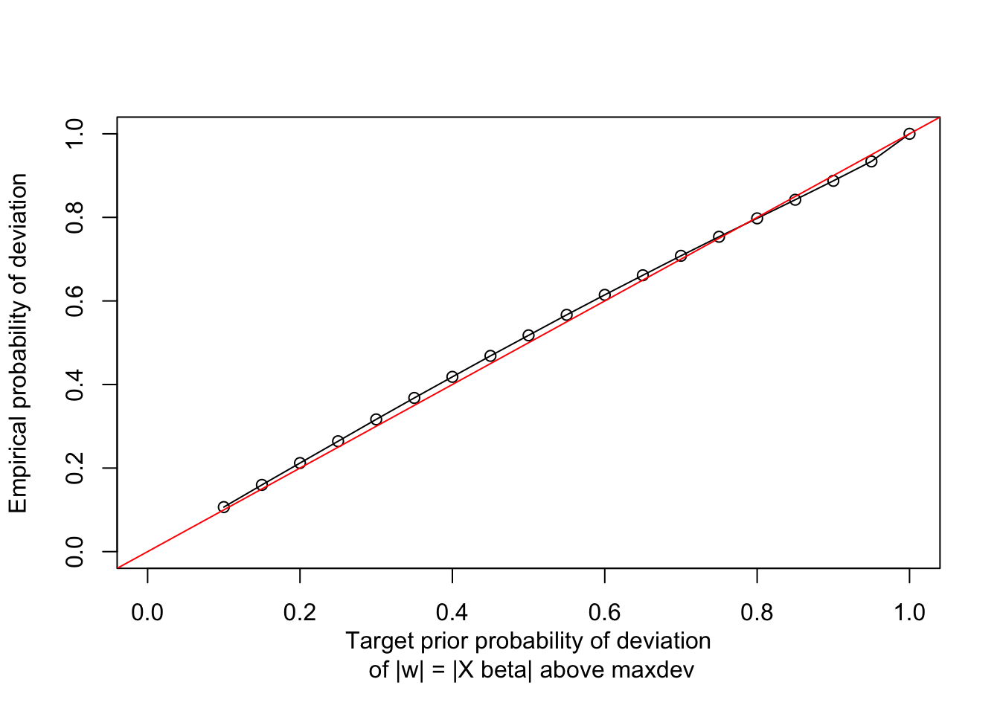

3 Helpers functions
These are some helper functions that are needed for the MCMC.
These functions are not documented for now. (TODO: do this).
#' A helper function to print the progress of a simulation. Place directly at
#' the beginning of the loop, before any computation happens.
#' @param isim isim.
#' @param nsim number of sim.
#' @param type type of job you're running. Defaults to "simulation".
#' @param lapsetime lapsed time, in seconds (by default).
#' @param lapsetimeunit "second".
#' @param start.time Start time, usually obtained using \code{Sys.time()}
#' @param fill Whether or not to fill the line.
#' @param beep Whether to beep when done.
printprogress <- function(isim, nsim, type="simulation", lapsetime=NULL,
lapsetimeunit="seconds", start.time=NULL,
fill=FALSE, beep=FALSE){
## If lapse time is present, then use it
if(fill) cat(fill=TRUE)
if(is.null(lapsetime) & is.null(start.time)){
cat("\r", type, " ", isim, "out of", nsim)
} else {
if(!is.null(start.time)){
if(isim == 1){
lapsetime = 0
remainingtime = "unknown"
endtime = "unknown time"
} else {
lapsetime = round(difftime(Sys.time(), start.time,
units = "secs"), 0)
remainingtime = round(lapsetime * (nsim - (isim - 1)) / (isim - 1), 0)
endtime = strftime((Sys.time() + remainingtime))
}
}
cat("\r", type, " ", isim, "out of", nsim, "with lapsed time",
lapsetime, lapsetimeunit, "and remaining time", remainingtime,
lapsetimeunit, "and will finish at", endtime, ".")
if(beep & isim==nsim){beepr::beep()}
}
if(fill) cat(fill=TRUE)
}
#' Helper function to print progress.
#'
#' @param iter Current iteration.
#' @param Nmc Total number of MCMC iterations.
#'
#' @export
progress <- function(iter, Nmc){
cat("MCMC iteration: ", iter,
".", round(iter/Nmc,3)*100, "% is done", fill = TRUE)
}
wcrossprod.fast <- function(x, w.sqrt, weighting = TRUE){
if(weighting){
x <- x * w.sqrt
}
return(Rfast::Crossprod(x,x))
}
#'
self.crossprod <- function(x){ ## this function can be deleted.
if(ncol(x) == 1){
ret <- x %*% t(x)
}else{
ret <- crossprod(x)
}
return(ret)
}
#'
logsumexp <- function (x) {
y = max(x)
y + log(sum(exp(x - y)))
}
#'
softmax <- function (x) {
exp(x - logsumexp(x))
}
#'
softmax2 <- function(x){
return(exp(x)/sum(exp(x)))
}
#'
logMNdensity <- function(y,invSig,logdet){
## The term "-log(2*pi)*d/2" is omitted
return(- Rfast::Crossprod(y, invSig) %*% y /2 - logdet/2)
}
#'
KL.MN <- function(p,q){
sum(p*log(p/q))
}
#'
pgdraw.mod <- function(b,c){
if(b>0){
ret <- pgdraw::pgdraw(b,c)
}else{
## print("in pgdraw: b=0")
ret <- 0
}
return(ret)
}
#' Helper to change stick-breaking vector |pi.sb| to regular probabilities.
#' @param pi.sb Stickbreaking probability vector.
#'
#' @return same sized vector of size K.
#'
#' @export
SB2MN <- function(pi.sb){
pi.sb <- c(pi.sb,1) ## append 1
K <- length(pi.sb)
pi.mn <- rep(0,K)
pi.mn[1] <- pi.sb[1]
for(kk in 2:K){
pi.mn[kk] <- pi.sb[kk]*(1-sum(pi.mn))
}
return(pi.mn)
}
#' Helper to change stick-breaking vector |pi.sb| to regular probabilities. The
#' opposite function of SB2MN.
#' @param pi.mn Probability vector.
#'
#' @return same sized vector of size K.
#'
#' @export
MN2SB <- function(pi.mn){
K <- length(pi.mn)
pi.sb <- rep(0,K-1)
pi.cs <- cumsum(pi.mn[-K])
pi.sb[1] <- pi.mn[1]
pi.sb[2:(K-1)] <- pi.mn[2:(K-1)]/(1-pi.cs[-(K-1)])
return(pi.sb)
}
#'
gamma2pi <- function(gamma,Xp){
XpGamma <- Rfast::Crossprod(gamma, Xp) ## K-1 x T
pi.sb <- 1/(1+exp(-XpGamma))
return(pi.sb)
}
#'
dtaMatCensor <- function(x,Cbox){
d <- dim(x)[2]
for(ii in 1:d){
x[,ii] <- pmin(pmax(x[,ii],Cbox[ii,1]),Cbox[ii,2])
}
return(x)
}
#'
censorIndicator <- function(x,Cbox){
d <- dim(Cbox)[1]
if(dim(x)[2]!=d & dim(x)[1]==d){
x <- t(x)
}
for(ii in 1:d){
x[,ii] <- (x[,ii]==Cbox[ii,2]) - (x[,ii]==Cbox[ii,1])
}
return(x)
}
#'
sample.region <- function(cc,Cbox){
limits <- NULL
d <- length(cc)
for(i in 1:d){
if(cc[i]==-1){
limits <- rbind(limits, c(-Inf,Cbox[i,1]))
}else if(cc[i]==0){
limits <- rbind(limits, c(-Inf,Inf))
}else{
limits <- rbind(limits, c(Cbox[i,2], Inf))
}
}
colnames(limits) <- c("lower","upper")
return(limits)
}
#'
rmatnorm.fast <- function(M,U,V){
## M is d x p
## U is d x d
## V is p x p
M <- as.matrix(M)
U <- as.matrix(U)
V <- as.matrix(V)
d <- nrow(M) ## dim of U
p <- ncol(M) ## dim of V
chol.U <- Rfast::cholesky(U) ## upper triangular matrix
chol.V <- Rfast::cholesky(V)
x <- Rfast::matrnorm(d, p)
return(Rfast::Crossprod(chol.U, x) %*% chol.V + M)
}
#'
samp.trunc.normal <- function(yy, zz, cc.info, bounds.info, mu.mat, Sigma.ell, dimdat){
cc <- abs(cc.info)==1
nc <- cc==0
d <- length(cc.info)
lower.info <- bounds.info[1:d]
upper.info <- bounds.info[(d+1):(2*d)]
mu <- mu.mat[,zz]
## If all dimensions are censored.
if(all(cc)){
sig = Sigma.ell[,,zz]
if(dimdat==1) sig = as.matrix(sig)
yy <- tmvnsim::tmvnsim(nsamp=1,d,lower=lower.info,upper=upper.info,
mean= mu, sigma = sig)$samp
## If /not/ all dimensions are censored.
} else {
## Conditional mean and variance
slope <- Sigma.ell[cc,nc,zz] %*% solve(Sigma.ell[nc,nc,zz])
cond.sig <- Sigma.ell[cc,cc,zz] - slope %*% Sigma.ell[nc,cc,zz]
cond.m <- mu[cc]+slope %*% (yy[nc]-mu[nc])
## Sample from this conditional truncated normal
if(dimdat==1) cond.sig = as.matrix(cond.sig)
stopifnot("matrix" %in% class(cond.sig))
imputed_y = tmvnsim::tmvnsim(nsamp = 1, length(cond.m),
lower=lower.info[cc], upper = upper.info[cc],
mean= cond.m, sigma = cond.sig)$samp
yy[cc] <- imputed_y
}
if(!is.numeric(yy)) browser()
return(yy)
}
#'
impute.censored <- function(ww, yy, zz, cc.info.mat, bounds.mat,
mu.mat, Sigma.ell, dimdat){
## Setup
stopifnot("array" %in% class(Sigma.ell))
if(length(zz) == 0){
ret <- NULL
}else if (length(zz)==1){
ret <- samp.trunc.normal(yy, zz, cc.info.mat, bounds.mat,
mu.mat, Sigma.ell, dimdat)
} else {
ret <- t(sapply(1:length(zz), function(ii)
samp.trunc.normal(yy[ii,], zz[ii],
cc.info.mat[ii,], bounds.mat[,ii],
mu.mat, Sigma.ell, dimdat)))
}
return(ret)
}
#'
gen.syn.dta <- function(T, K, p, d=3, Cbox=NULL, Pi =NULL, avg.clust.size=100){
## this function can be deleted
### by default, d = 3
nt <- stats::rpois(n=T,lambda=avg.clust.size*K)
X <- t(sapply(1:p, function(pp) stats::arima.sim(list(order=c(1,0,0), ar=pp/(pp+1)/2), n=T)))
Beta <- array(stats::rnorm(K*p*d), c(d,p,K))
beta0 <- matrix(stats::rnorm(K*d), nrow=d,ncol=K)
if(is.null(Pi)){
Gamma0 <- matrix(stats::rnorm(K*p), nrow= p, ncol = K)
Gamma0 <- t(apply(Gamma0,1,function(x) x-x[K]))/10
gamma0 <- (1:K)/1
Pi <- t(apply(t(X) %*% Gamma0+gamma0, 1, function(x) exp(x)/sum(exp(x))))
}
Sigma <- stats::rWishart(K, 1, diag(d))
Z.list <- lapply(1:T, function(tt) sample(1:K, nt[[tt]], prob = Pi[tt,],replace = TRUE))
Y.list <- NULL
for(t in 1:T){
Z <- Z.list[[t]]
Y.list[[t]] <- t(sapply(Z,function(z)
MASS::mvrnorm(n=1, mu = beta0[,z]+Beta[,,z]%*%X[,t],Sigma = Sigma[,,z])))
}
Ytrue.list <- Y.list
if(is.null(Cbox)==FALSE){
Y.list <- lapply(Y.list, function(x) dtaMatCensor(x,Cbox))
}
return(list(Y.list=Y.list, X=X, Z.list=Z.list, nt=nt, Cbox=Cbox, K=K,
Ytrue.list = Ytrue.list,
Pi = Pi, beta0 = beta0, Beta = Beta, Sigma = Sigma))
}
#'
loglik_eval <- function(mu.list, chol.Sig.list,
W.list, X.list, Y.list, Z.list,
nt.list, simple = FALSE, n.cores = 1){
## logPiZ <- mcmapply(function(xx,yy,mm){sapply(1:K, function(kk)
## mvnfast::dmvn(yy, mm[,kk], chol.Sig.list[[kk]],log=TRUE,isChol = TRUE)) },
## xx=X.list, yy = Y.list, mm=mu.list, mc.cores = min(n.cores, T),
## SIMPLIFY = FALSE)
if(simple == TRUE){
ll.vec <- sapply(1:nt.list[[1]], function(id)
mvnfast::dmvn(Y.list[[1]][id,],
mu.list[[1]][,Z.list[[1]][id]],
chol.Sig.list[[Z.list[[1]][id]]],
log=TRUE, isChol = TRUE))
out <- sum(ll.vec * W.list[[1]]) / nt.list[[1]]
}else{
ll.sums <- parallel::mcmapply(function(ww, xx,yy,mm,zz,nt){
sum(ww * sapply(1:nt,function(id)
mvnfast::dmvn(yy[id,], mm[,zz[id]], chol.Sig.list[[zz[id]]],
log=TRUE,isChol = TRUE)) )},
ww = W.list, xx = X.list, yy = Y.list,
mm=mu.list, zz = Z.list, nt = nt.list,
mc.cores = min(n.cores, T), SIMPLIFY = TRUE)
out <- Reduce("+",ll.sums)/sum(unlist(nt.list))
}
return(out)
}Heres a function that makes a censoring box (dimdat by 2 matrix, where the first column is the lower cutoff, and the second column is the upper cutoff).
#' Helper to obtain the censoring limits |Cbox|, which is a 2-colum matrix with columns |bounds.lower| and |bounds.upper|.
#'
#' @param ylist Data (list of d-column matrices) including censored particles.
#'
#' @return |dimdat| by 2 matrix.
#' @export
get_Cbox <- function(ylist){
## Setup
dimdat = ncol(ylist[[1]])
## Define censor limits
bounds.lower <- Rfast::rowMins(matrix(unlist(
lapply(ylist, function(xx) Rfast::colMins(xx,value = TRUE))), nrow = dimdat), value = TRUE)
bounds.upper <- Rfast::rowMaxs(matrix(unlist(
lapply(ylist, function(xx) Rfast::colMaxs(xx,value = TRUE))), nrow = dimdat), value = TRUE)
## bounds.lower <- lapply(ylist,function(xx)
## Rfast::colMins(xx,value = TRUE)) %>%
## do.call(rbind,.) %>% Rfast::colMins(.,value = TRUE)
## bounds.upper <- lapply(ylist,function(xx)
## Rfast::colMaxs(xx,value = TRUE)) %>%
## do.call(rbind,.) %>% Rfast::colMaxs(.,value = TRUE)
## Modify censorship slightly
Cbox <- cbind(bounds.lower, bounds.upper)
}3.1 Ball constraint on \(X^{(t)} \beta_k\)
This function seems to have a bug.
#' Obtain the g parameter by simulation.
#'
#' @param X the design matrix, TT by p, (that doesn't include the intercept)
#' @param dimdat the dimension of the cytogram space
#' @param maxdev Maximum deviation of cluster means away from its grand mean.
#' @param numclust the number of experts
#' @param ggvec the vector of g parameter values to calculate the prior probability by Monte Carlo samples
#' @param Nmc Monte Carlo simulation sample size, with default value being 1e4.
#' @param n.cores the number of CPU cores to be used for parallelization
#' @param viz show the plot of the fitted relationship between the g parameter and the prior probability.
#'
#'
#' @return the g parameter with desired prior probability on maxdev
#'
#' @export
maxdev_to_gg <- function(X, dimdat, maxdev, numclust, ggvec,
Nmc = 1e4 , prior.prob = 0.99,
viz = FALSE, n.cores = 1, verbose = FALSE){
## Basic setup
p = ncol(X) ## Remember, X is T x p
d = dimdat
## Helper function
## @param tX is the transpose of X
ball.deviance <- function(gg, rr, tX,
Nmc=5000,
nu0=d,
nu1=p+1,
S0=diag(d),
S1=diag(p+1)){
inv.XTX <- solve(tcrossprod(tX))
max.deviance <- rep(NA,Nmc)
Sig.ell <- matrixsampling::rinvwishart(Nmc,nu0+d,S0)
beta.ell <- apply(Sig.ell,3,function(xx)
as.matrix(matrixNormal::rmatnorm(M = matrix(0,d,p),
U = xx,
V = inv.XTX*gg,
tol = .Machine$double.eps^0.5)),
simplify = FALSE)
xb <- lapply(beta.ell, function(bb) bb%*% tX)
# length of list: Nmc
# each element: d x T
max.deviance <- lapply(xb, function(mat){
apply(mat,2,function(cols) crossprod(cols)) %>% max()
}) %>% unlist()
prob <- mean(max.deviance <= rr^2)
return(list(gg = gg, rr = rr, prob = prob))
}
gglist <- as.list(ggvec)##as.list(1:40/100)
n.cores <- min(n.cores, length(gglist))
if(verbose) cat("Calculating gg value numerically", fill=TRUE)
plist <- parallel::mclapply(1:length(gglist), function(igg){
if(verbose) printprogress(igg, length(gglist), "Candidate values")
gg = gglist[[igg]]
ball.deviance(gg, maxdev, t(X), Nmc = Nmc)$prob
},
mc.cores = n.cores)
if(verbose) cat(fill=TRUE)
## Make linear interpolation at a fine grid
res = stats::approx(x = unlist(gglist), y = unlist(plist), method="linear", n = 100)
newx = res$x
newy = res$y
## Get closest point
imin = which.min(abs(newy - prior.prob ^(1/numclust)))
## Make some plots to confirm
if(viz){
plot(gglist,plist,type = "l",
ylab = "Prob outside of \n radius r", xlab = "Value of |gg|")
graphics::abline(h=0.05,lwd=2,col = "red")
graphics::abline(h=0.01,lwd=2,col = "red")
## lines(y=newy, x=newx,lwd=2,col="blue")
## abline(v=newx[imin])
}
return(newx[imin])
}#' Closed form for obtaining the g parameter by simulation. Currently only works for dimdat=1
#'
#' @param X the design matrix, TT by p, (that doesn't include the intercept)
#' @param dimdat the dimension of the cytogram space
#' @param maxdev Maximum deviation of cluster means away from its grand mean.
#' @param numclust the number of experts
#' @param prior_prob prior probability
#' @param viz show the plot of the fitted relationship between the g parameter and the prior probability.
#'
#'
#' @return the g parameter with desired prior probability on maxdev
#'
#' @export
maxdev_to_gg_closed_form <- function(X, dimdat, maxdev, numclust, prior_prob = 0.99, viz = FALSE){
stopifnot(dimdat == 1)
obj = svd(X)
pp = ncol(X)
TT = nrow(X)
## maxdev = 0.115525
## z_cutoff = 2.58 ## for 99% for one cluster
z_cutoff = qnorm(1-(1-prior_prob^(1/numclust))/2)
## Form the constant c and matrix P, multiplied to form the prior covariance cP.
P = obj$u %*% t(obj$u)
c = (maxdev^2 / z_cutoff^2 / diag(P)) %>% median
A = c * obj$v %*% diag(1/(obj$d^2)) %*% t(obj$v)
cP = (X %*% A %*% t(X)) ##%>% diag() %>% plot()
return(c)
}Testing out this function.
set.seed(100)
X = rnorm(1000,0,1) %>% matrix(ncol = 10, nrow = 100)
obj = svd(X)
pp = ncol(X)
TT = nrow(X)
maxdev = 0.5
numclust = 1
prior_probs = seq(from = 0.1, to = 1, by = 0.05)
sapply(prior_probs, function(prior_prob){
z_cutoff = qnorm(1-(1-prior_prob^(1/numclust))/2)
## Form the constant c and matrix P, multiplied to form the prior covariance cP.
P = obj$u %*% t(obj$u)
c = (maxdev^2 / z_cutoff^2 / diag(P)) %>% median()
## c = (maxdev^2 / z_cutoff^2 / mean(diag(P)))
A = c * obj$v %*% diag(1/(obj$d^2)) %*% t(obj$v)
cP = (X %*% A %*% t(X)) ##%>% diag() %>% plot()
## Generate beta and form w = X beta_k
many_betas = MASS::mvrnorm(100000, mu = rep(0, pp), Sigma = A)
w = X %*% t(many_betas)
## Plotting
if(FALSE){
## Make a plot of all w = X beta_k
w %>% .[,1:500] %>% matplot(pch = 16, col = rgb(0,0,0,0.1))
## Draw the lines where the 95'th quantiles are.
qs = w %>% apply(1, function(one_w){
quantile(one_w, probs=0.975)})
lines(qs, col = 'red')
qs = w %>% apply(1, function(one_w){
quantile(one_w, probs=0.025)})
lines(qs, col = 'red')
abline(h = maxdev, lwd = 2, lty = 2, col = 'red')
abline(h = -maxdev, lwd = 2, lty = 2, col = 'red')
text(x=50, y = maxdev*1.1, labels = "Maximum deviation")
legend("topleft", col = 'red', lwd=1, lty=1, legend = c("0.95 quantile"))
}
sum((abs(w)<maxdev))/length(w)
}) -> coverages
plot(x = prior_probs, y = coverages, type = 'o', ylim = c(0,1), xlim = c(0,1),
xlab = "Target prior probability of deviation\n of |w| = |X beta| above maxdev",
ylab = "Empirical probability of deviation")
abline(0,1, col = 'red')
Here is the 3d version (not properly tested yet, doesnt seem to work).
maxdev_to_gg_closed_form_3d <- function(X, dimdat, maxdev, numclust,
prior_prob = 0.99, viz = FALSE){
stopifnot(dimdat == 3)
obj = svd(X)
pp = ncol(X)
TT = nrow(X)
## maxdev = 0.115525
## z_cutoff = 2.58 ## for 99% for one cluster
## z_cutoff = qnorm(1-(1-prior_prob^(1/numclust))/2)
chisq_cutoff = qchisq(p=1-(1-prior_prob^(1/numclust)), df = dimdat)
## Form the constant c and matrix P, multiplied to form the prior covariance cP.
P = obj$u %*% t(obj$u)
c = (maxdev^2 / chisq_cutoff^2 /diag(P)) %>% median()
A = c * obj$v %*% diag(1/(obj$d^2)) %*% t(obj$v)
cP = (X %*% A %*% t(X)) ##%>% diag() %>% plot()
if(viz){
## Generate beta and form w = X beta_k
## many_betas = MASS::mvrnorm(100000, mu = rep(0, pp), Sigma = A)
many_betas = matrixsampling::rmatrixnormal(n=100000,
M=matrix(0, pp, dimdat),
U=A,
V = diag(rep(1,dimdat)))
wlist = lapply(1:100000, function(ii)X %*% many_betas[,,ii])
wlist_rownorms = wlist %>% lapply(function(w) apply(w, 1,function(a)sum(a*a)))
## Make a plot of all |w|_2, w = X beta_k
## wlist_rownorms %>% lapply(function(a)a[1]) %>% .[1:500] %>% matplot(pch = 16, col = rgb(0,0,0,0.1))
wlist_rownorms %>% .[1:500] %>% do.call(rbind, .) %>% matplot(pch = 16, col = rgb(0,0,0,0.1))
## Draw the lines where the 95'th quantiles are.
qs = wlist_rownorms %>% .[1:500] %>% do.call(rbind, .) %>% apply(1, function(one_w){
quantile(one_w, probs=0.95)})
lines(qs, col = 'red')
abline(h = maxdev, lwd = 2, lty = 2, col = 'red')
text(x=50, y = maxdev*1.1, labels = "Maximum deviation")
legend("topleft", col = 'red', lwd=1, lty=1, legend = c("0.95 quantile"))
}
return(c)
}(This should reduce to the dimdat=1 case. Work in progress!)
set.seed(100)
X = rnorm(1000,0,1) %>% matrix(ncol = 10, nrow = 100)
obj = svd(X)
pp = ncol(X)
TT = nrow(X)
maxdev = 0.5
dimdat = 1
numclust = 1
prior_probs = seq(from = 0.1, to = 1, by = 0.1)
sapply(prior_probs, function(prior_prob){
print(prior_prob)
chisq_cutoff = qchisq(p = (1-(1-prior_prob^(1/numclust))), df = dimdat)
## print(1-(1-prior_prob^(1/numclust)))
## print(chisq_cutoff)
## Form the constant c and matrix P, multiplied to form the prior covariance cP.
P = obj$u %*% t(obj$u)
c = (maxdev^2 / chisq_cutoff^2 / diag(P)) %>% median()
A = c * obj$v %*% diag(1/(obj$d^2)) %*% t(obj$v)
cP = (X %*% A %*% t(X)) ##%>% diag() %>% plot()
## Generate beta and form w = X beta_k
## many_betas = MASS::mvrnorm(100000, mu = rep(0, pp), Sigma = A)
nsim = 10000
many_betas = matrixsampling::rmatrixnormal(n = nsim,
M = matrix(0, pp, dimdat),
U = A,
V = diag(rep(1,dimdat)))
wlist = lapply(1:nsim, function(ii)X %*% many_betas[,,ii])
wlist_rownorms = wlist %>% lapply(function(w) apply(w, 1,function(a)sum(a*a)))
## Make a plot of all |w|_2, w = X beta_k
if(FALSE){
## wlist_rownorms %>% lapply(function(a)a[1]) %>% .[1:500] %>% matplot(pch = 16, col = rgb(0,0,0,0.1))
wlist_rownorms %>% .[1:500] %>% do.call(rbind, .) %>% matplot(pch = 16, col = rgb(0,0,0,0.1))
## Draw the lines where the 95'th quantiles are.
qs = wlist_rownorms %>% .[1:500] %>% do.call(rbind, .) %>% apply(1, function(one_w){
quantile(one_w, probs=0.95)})
lines(qs, col = 'red')
abline(h = maxdev, lwd = 2, lty = 2, col = 'red')
text(x=50, y = maxdev*1.1, labels = "Maximum deviation")
legend("topleft", col = 'red', lwd=1, lty=1, legend = c("0.95 quantile"))
}
normmat = do.call(rbind, wlist_rownorms)
hist(normmat[,1])
abline(v = maxdev, col = 'red', lwd=2)
sum((abs(normmat)< maxdev))/(length(normmat))
}) -> coverages
plot(x = prior_probs, y = coverages, type = 'o', ylim = c(0,1), xlim = c(0,1),
xlab = "Target prior probability of deviation\n of |w| = |X beta| above maxdev",
ylab = "Empirical probability of deviation")
abline(0,1, col = 'red')
Here's a function to take the stick-breaking $\gamma$ parameters (with $X$) and
transform them to a probability vector.
```r
#' Description goes here
#'
#' @param ga document this carefully
#' @param Xp 1 vector appended to left of covariate matrix X.
#'
#' @export
#' @return (OO x OO) matrix with each row..
post_process_pie <- function(Xp,ga){
Xga <- Xp %*% ga
pie.SB <- 1/(1+exp(-Xga))
return(t(apply(pie.SB,1, SB2MN)))
}Heres a helper to change the results from an MCMC to a flowmix- (or flowtrend-) like object. This way, we can use the plotting helpers from those packages.
#' Reformatting the results from MCMC to create a flowmix-like object that
#' contains of the posterior means of the model parametr. This allows you to use
#' plotting code from the flowmix and flowtrend package.
#'
#' @param res The result of doing MCMC.
#' @param last_draws_inds The last few MCMC draws to take. Defaults to NULL.
#'
#' @return posterior mean estimates of the cluster coefficients, mean, variance
#' and probability.
#'
#' @export
#'
mcmc_res_to_flowmix <- function(res, last_draws_inds=NULL){
## Setup
X = t(res$dat.info$X)
numclust = res$pos.Sigma %>% .[3]
TT = nrow(X)
p = ncol(X)
numclust = res$dat.info$numclust
dimdat = res$dat.info$ylist[[1]] %>% ncol()
obj = list()
Nmc = res$pos.beta %>% dim() %>% tail(1)
if(is.null(last_draws_inds)) last_draws_inds = 1:Nmc
if(!is.null(last_draws_inds))stopifnot(all(last_draws_inds<=Nmc))
## last_draw_inds = 1:dim(res$pos.beta)[4]
## Means
pos.mn <- list()
for(kk in 1:numclust){
last_draws_inds
pos.mn[[kk]] <- mclapply(last_draws_inds, function(mm){
res$pos.beta[,,kk,mm,drop=TRUE]%*% rbind(1,t(X))
},
mc.cores = detectCores())%>%
abind::abind(.,along=3)
}
post.mn.mean <- lapply(pos.mn, function(aa){
apply(aa,c(1,2),mean)})
obj$mn = array(NA, dim = c(TT, dimdat,numclust))
for(iclust in 1:numclust){
obj$mn[,,iclust] = t(post.mn.mean[[iclust]])
}
## probabilities
## pos.gamma.mean = res$pos.gamma[,,last_draws_inds] %>% apply(c(1:2), mean)
pos.SB <- apply(res$pos.gamma[,,last_draws_inds], c(2,3), function(ga)
1/(1+exp(-t(ga) %*% rbind(1,t(X)))))
pos.MN <- apply(pos.SB, c(1,3), flowcut:::SB2MN)
post.pi.mean <- apply(pos.MN,c(1,2), mean)
obj$prob = t(post.pi.mean)
## cluster covariances
obj$sigma = array(NA, dim = c(numclust, dimdat, dimdat))
obj$numclust = numclust
res$pos.Sigma %>% dim()
## post.Sigma.mean <- apply(res$pos.Sigma,c(1,2,3), mean) %>% aperm(c(3,1,2))
pos.Sigma.mean = res$pos.Sigma[,,,last_draws_inds] %>% apply(c(1,2,3), mean) %>% aperm(c(3,1,2))
obj$sigma = pos.Sigma.mean
## mean regression coefficients
pos.beta = res$pos.beta[,,,last_draws_inds]
pos.beta.mean = pos.beta %>% apply(c(1,2,3), mean)
obj$beta = pos.beta.mean
## prob regression coefficients
pos.gamma.mean = res$pos.gamma[,,last_draws_inds] %>% apply(c(1:2), mean)
obj$alpha = pos.gamma.mean
## Bundle and return
obj$numclust = numclust
obj$TT = TT
class(obj) = "flowmix"
return(obj)
}Heres a function to impute the ys based on a model defined by the posterior mean of the last 500 draws.
#' Imputing particles to impute the y's based on a model defined by the posterior
#' mean of the last 500 draws. This is separated out from the Gibbs since the result takes up a lot of memory.
#' (This is all code in the Gibbs.fast() function.)
#'
#'
#' @param ylist Original particles
#' @param countslist Biomass list
#' @param Cbox Bounding box.
#' @param mcres The converted MCMC result, using e.g., |mcmc_res_to_flowmix(res,
#' last_draws_inds = 1001:1500)|
#' @param n.cores number of CPU cores to use
#'
#' @export
impute <- function(ylist, countslist, Cbox, mcres, n.cores=1){
## if(FALSE){
## ## Temporary
## ylist = datobj$ylist
## countslist = datobj$countslist
## ## TEMPORARY: Add a bounding box |Cbox|
## bounds.lower <- lapply(datobj$ylist,function(xx)
## Rfast::colMins(xx,value = TRUE)) %>%
## do.call(rbind,.) %>% Rfast::colMins(.,value = TRUE)
## bounds.upper <- lapply(datobj$ylist,function(xx)
## Rfast::colMaxs(xx,value = TRUE)) %>%
## do.call(rbind,.) %>% Rfast::colMaxs(.,value = TRUE)
## Cbox <- cbind(bounds.lower,bounds.upper)
## Cbox <- res$dat.info$Cbox
## datobj$Cbox = Cbox
## ## Temporary
## mcres = mcmc_res_to_flowmix(res, last_draws_inds = 1001:1500)
## }
## Get everything
ntlist = sapply(ylist, nrow)
TT = length(ylist)
NN <- sum(ntlist)
dimdat <- ncol(ylist[[1]])
countsTotal <- sapply(countslist,sum) %>% sum()
alpha.factor <- NN/countsTotal
W.list <- lapply(countslist, function(xx) xx*alpha.factor)
## More processing
Censor.list <- lapply(ylist, function(x) censorIndicator(x,Cbox))
censor.01.list <- lapply(Censor.list, function(x) apply(x,1, function(xx){
sum(abs(xx)) > 0})) ## expensive
censor.which.list <- lapply(censor.01.list, function(cc) which(cc==TRUE))
censored.ylist <- mapply(function(yy,c01) {yy[c01==TRUE,,drop=FALSE]},
yy = ylist, c01 = censor.01.list)
censored.C.list <- mapply(function(c01,cc){cc[c01==TRUE,,drop=FALSE]},
c01 = censor.01.list, cc=Censor.list)
censored.W.list <- mapply(function(c01,ww){ww[c01==TRUE]},
c01 = censor.01.list, w=W.list)
ntlist.censor <- sapply(censor.01.list, sum)
Z.list = flowmix::gate(mcres, ylist, NULL, 1111, eps_estep = 1E-20)
censored.Z.list <- mapply(function(c01,zz){zz[c01 == TRUE]},
c01 = censor.01.list, zz = Z.list)
## Sort of expensive
samp.region.list <- lapply(1:TT, function(tt){
c01 <- censor.01.list[[tt]]
cc <- Censor.list[[tt]]
if(sum(c01==TRUE)>1){
apply(cc[c01==TRUE,,drop=FALSE],1,function(xx)
## flowcut:::sample.region(xx,Cbox))
sample.region(xx,Cbox))
}else if(sum(c01==TRUE)==1){
matrix(sample.region(cc[c01==TRUE,,drop=FALSE],Cbox),ncol=1)
}else{
NULL
}
})
## Get the censored particles
Sig.ell = mcres$sigma %>% aperm(c(2,3,1))
imputed.ylist <- parallel::mclapply(1:TT, function(tt) {
mu.mat = mcres$mn[tt,,]
yy = impute.censored(ww = censored.W.list[[tt]],
yy = censored.ylist[[tt]],
zz = censored.Z.list[[tt]],
cc.info.mat = censored.C.list[[tt]],
bounds.mat = samp.region.list[[tt]],
##mu.list[[tt]]
mu.mat = mu.mat, Sigma.ell = Sig.ell,
dimdat = dimdat)
if(dimdat==1 & !is.null(yy)) yy = t(yy)
return(yy)
}, mc.cores = n.cores, mc.preschedule = FALSE)
## Finally, ca
imputed_ylist <-
parallel::mcmapply(function(yy, c01, imp){replace(yy, c01, imp)},
yy = ylist, c01 = censor.01.list, imp = imputed.ylist,
mc.cores = n.cores, SIMPLIFY = FALSE)
return(list(imputed_ylist = imputed_ylist, censor.01.list = censor.01.list,
memlist = Z.list))
}